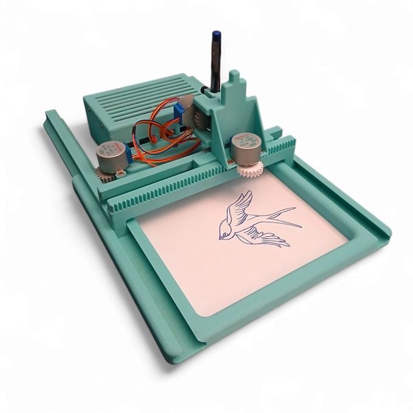
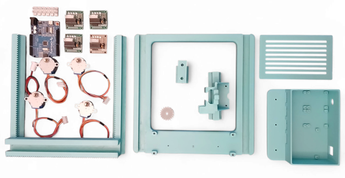
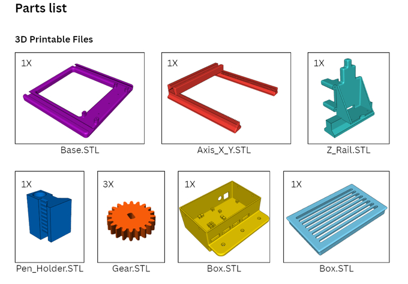

Bring CNC technology to your desk
MakerPlot is a fully 3D printable Arduino CNC plotter designed for makers, students and electronics enthusiasts. This project combines 3D printing, electronics and programming into a compact desktop machine that you can build yourself. The goal is simple: create an affordable and educational CNC platform that lets anyone experiment with digital fabrication.

Build your own machine
All mechanical parts are designed to be printed with a standard FDM 3D printer. The design focuses on simplicity, reliability and easy assembly. The downloadable package contains the STL files needed to print the complete structure of MakerPlot. No expensive equipment is required: just print, assemble and start creating.

What can you create?
MakerPlot can be used for many creative experiments:
✏️ Automatic drawings and patterns
🎨 Custom artwork
🔧 Learning CNC principles
💻 Arduino motion control experiments
🖨️ Combining 3D printing and electronics

Digital Package Includes
- Complete STL files for 3D printing
- Complete mechanical design files
- Assembly instructions
- Arduino compatible design
- Future project updates
What you need
- 3D printer
- Arduino board
- Stepper motors
- Belts and pulleys
- Basic screws and hardware